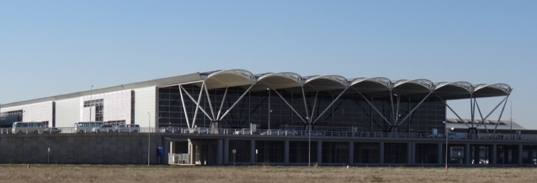

Sân bay quốc tế Nội Bài là cửa ngõ hàng không lớn nhất Miền Bắc, đón hàng chục triệu lượt khách mỗi năm. Đi kèm với lượng khách khổng lồ là vô số lời mời chào taxi, xe ôm ngay tại sảnh đến khiến không ít hành khách bị "hét giá" hoặc đi vòng vo tốn thời gian. Bài viết dưới đây tổng hợp những kinh nghiệm thực tế giúp bạn đặt xe đưa đón sân bay Nội Bài vừa rẻ, vừa đúng giờ, vừa an toàn.
Vì sao nên đặt xe đưa đón sân bay trước thay vì bắt xe tại sảnh?
Khu vực sảnh đến của sân bay Nội Bài luôn đông đúc, đặc biệt vào khung giờ cao điểm (6h-9h sáng và 18h-22h tối). Nếu không đặt xe trước, bạn sẽ phải xếp hàng chờ taxi, hoặc dễ gặp phải các xe "dù" không đồng hồ tính cước, báo giá tuỳ hứng. Đặt xe trước qua hotline hoặc website giúp bạn:
Chủ động giờ giấc
Xe đã có mặt đúng giờ
khách hạ cánh, không phải chờ đợi hay gọi thêm.
Biết trước giá cước
Giá được báo và chốt
trước khi lên xe, không phát sinh thêm bất kỳ chi phí nào giữa
đường.
An toàn, có thông tin xe rõ ràng
Bạn nhận
được biển số xe, tên lái xe, số điện thoại liên hệ trước khi xe
tới đón.
Các hình thức di chuyển tới/từ sân bay Nội Bài
Taxi truyền thống bắt tại sảnh — tiện lợi nhưng dễ gặp tình trạng chờ lâu vào giờ cao điểm, giá theo đồng hồ có thể đội lên nếu tắc đường.
Xe công nghệ (gọi qua app) — giá tham khảo trước khi đặt, nhưng vào giờ cao điểm thường tăng giá và khó bắt được xe ngay tại khu vực sân bay.
Xe buýt sân bay — chi phí thấp nhất, phù hợp người đi một mình, ít hành lý, nhưng mất nhiều thời gian và không đưa đón tận nơi.
Xe đưa đón sân bay đặt trước (limousine, xe riêng) — đón tận cửa ra, trả tận nhà, giá cố định theo tuyến, phù hợp gia đình, nhóm khách hoặc người có nhiều hành lý.
Checklist chọn nhà xe uy tín
Trước khi đặt xe, bạn nên kiểm tra nhanh những điều sau để tránh gặp phải nhà xe kém chất lượng:
Có bảng giá niêm yết rõ ràng — nhà xe uy tín luôn công khai bảng giá theo từng tuyến, từng loại xe trên website hoặc khi báo giá qua điện thoại.
Xác nhận thông tin xe trước giờ đón — được cung cấp biển số, số điện thoại lái xe ít nhất 30-60 phút trước giờ hẹn.
Có hoá đơn, chính sách rõ ràng — hỗ trợ xuất hoá đơn VAT nếu cần, có chính sách huỷ/đổi lịch minh bạch.
Đánh giá thực tế từ khách hàng cũ — tham khảo phản hồi trên Google, Facebook trước khi đặt.
Bảng giá tham khảo tuyến Hà Nội – Sân bay Nội Bài
Dưới đây là mức giá tham khảo (đã bao gồm phí cầu đường) cho tuyến nội thành Hà Nội – Sân bay Nội Bài, áp dụng cho xe đón tận nơi:
Hà Nội ➜ Nội Bài: Xe 4 chỗ từ 170.000đ, xe 5 chỗ từ 180.000đ, xe 7 chỗ từ 220.000đ, xe 16 chỗ từ 330.000đ.
Nội Bài ➜ Hà Nội: Xe 4 chỗ từ 180.000đ, xe 5 chỗ từ 190.000đ, xe 7 chỗ từ 240.000đ, xe 16 chỗ từ 430.000đ.
Khứ hồi trong ngày: từ 360.000đ tuỳ loại xe. Giá có thể thay đổi theo điểm đón cụ thể và khung giờ, quý khách nên liên hệ hotline để được báo giá chính xác nhất trước khi đặt.
Lưu ý khi đặt xe sân bay Nội Bài

Nên đặt xe trước tối thiểu 1-2 giờ (hoặc trước 1 ngày với chuyến bay sớm/khuya) để nhà xe sắp xếp tài xế phù hợp. Khi đặt, hãy cung cấp đầy đủ số hiệu chuyến bay, giờ hạ cánh, số lượng hành khách và hành lý để được bố trí đúng loại xe. Với các chuyến bay đêm hoặc sáng sớm, nên chọn nhà xe có hỗ trợ 24/7 để tránh trường hợp không liên hệ được khi có thay đổi giờ bay.
Vì sao nên chọn Taxi Gò Công
Taxi Gò Công cung cấp dịch vụ đưa đón sân bay với giá niêm yết trọn gói, đội xe đời mới từ 4 đến 16 chỗ, tài xế thông thạo đường, đón đúng giờ và hỗ trợ khách hàng 24/7. Quý khách có thể đặt xe nhanh qua hotline 0386 263 287 hoặc đặt trực tiếp trên website để nhận báo giá tức thì trước khi khởi hành.